Бежецк
Экономика
ООО Завод Железобетонных конструкций
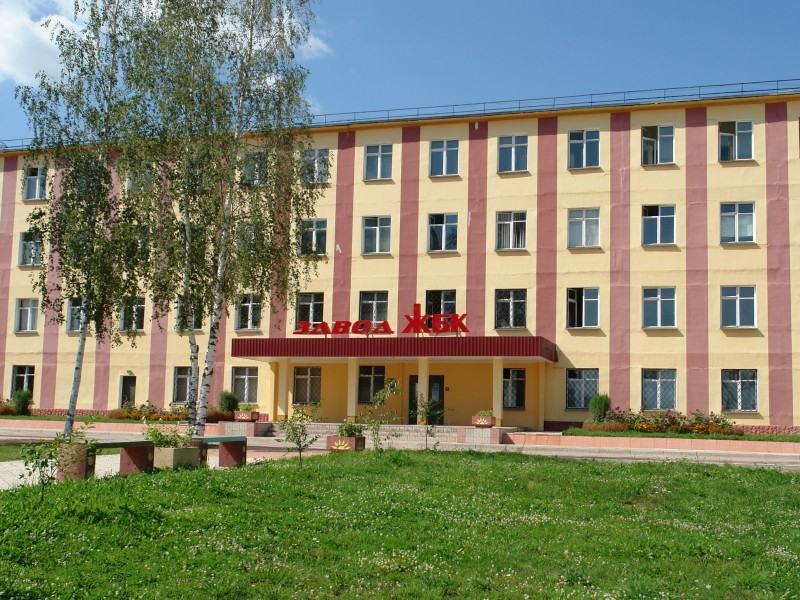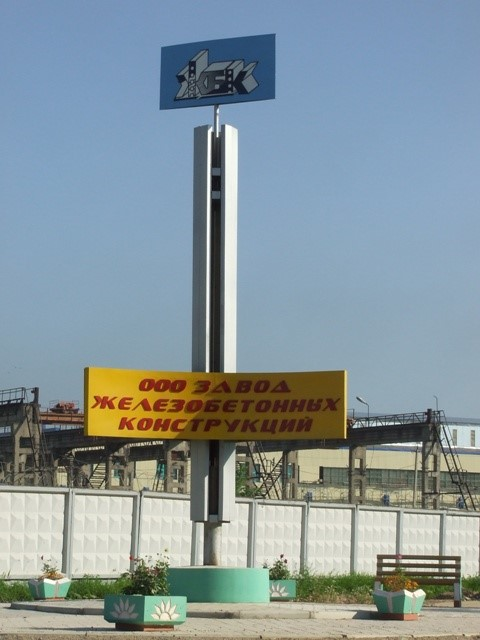 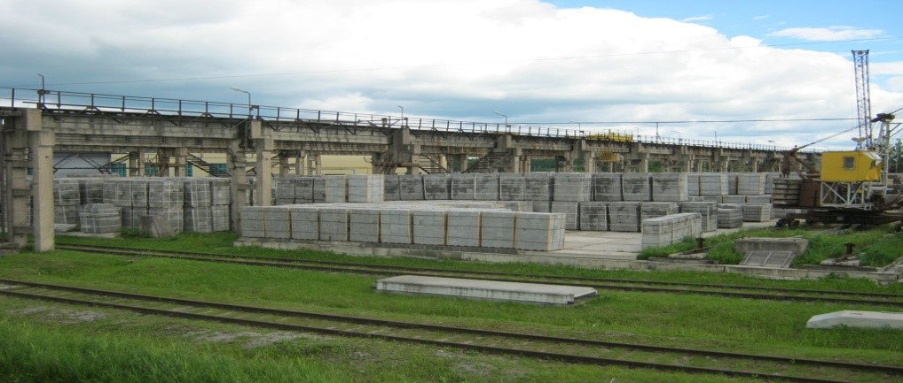С 1965 года завод специализируется на выпуске железобетонных конструкций и изделий, являясь одним из крупнейших предприятий строительной индустрии Тверской области. В настоящее время ООО «Завод ЖБК» выпускает продукцию четырех групп строительных материалов и конструкций: железобетонные (более 140 наименований), сборные панельные дома 135-й серии (1, 2 и 3-х этажные), изделия из пенополистирола и полистиролбетона. Для городского и приусадебного благоустройства выпускаются разнообразные скамьи и цветочницы. Продукция ООО "Завод ЖБК" востребована в Тверской, Московской, Ярославской, Вологодской, Ленинградской, Псковской и Новгородской областях.
«Бежецкий лен» Льнозавод
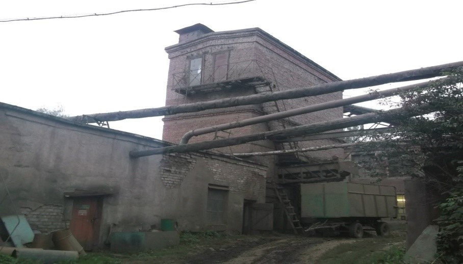 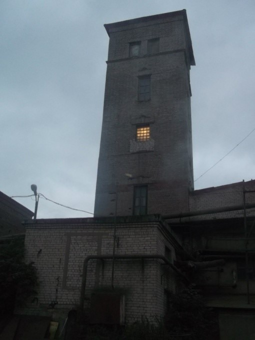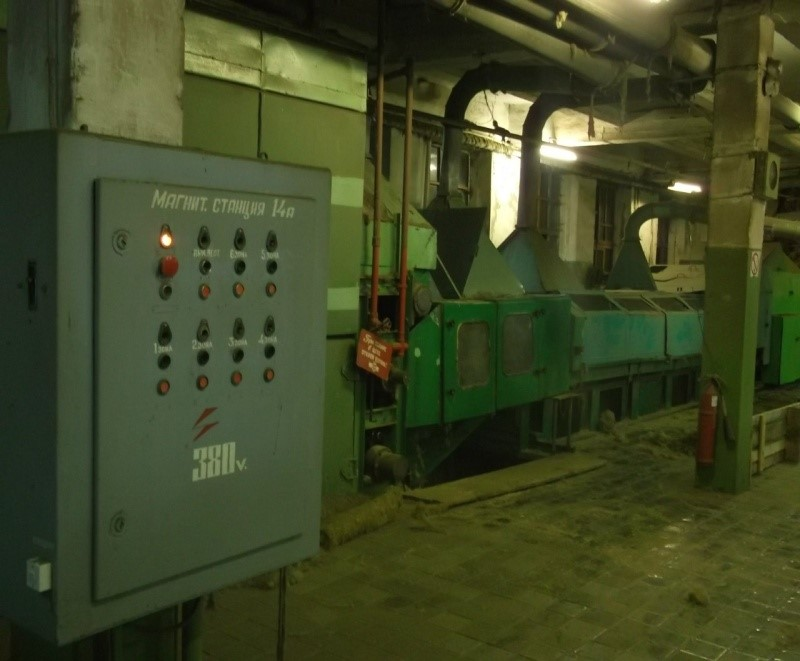 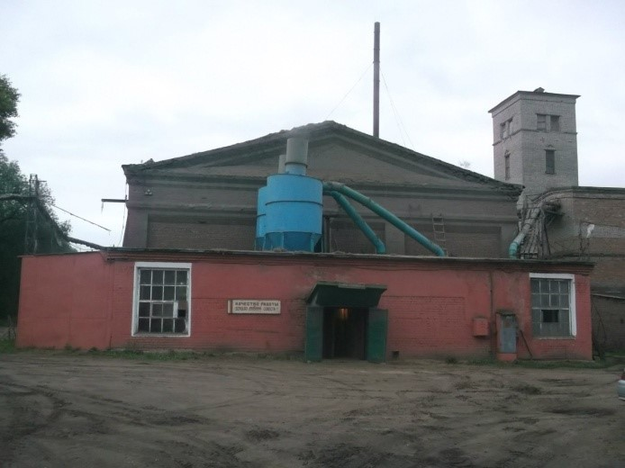ООО «Тверская агропромышленная компания», торговая марка «Бежецкий лен», была создана в 2007 году. Это самая крупная в европейской части РФ вертикально интегрированная компания, специализирующаяся на выращивании льна и производстве продуктов его переработки. Тверская АПК выращивает лен на площади 3100 гектаров, что составляет около 9% от российского льняного клина. Производит до 3 тысяч тонн льноволокна в год, причем по показателю получаемого с гектара волокна является одной из самых эффективных компаний в России. АПК сама осуществляет переработку льнотресты в волокно. Компании принадлежит два льнозавода – в Бежецке и Сонкове. Ее продукция поставляется на ведущие российские льнокомбинаты – в Вологде, Костроме, Иванове. В компании работают 350 человек.
Завод «Автоспецоборудование»
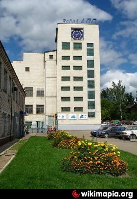 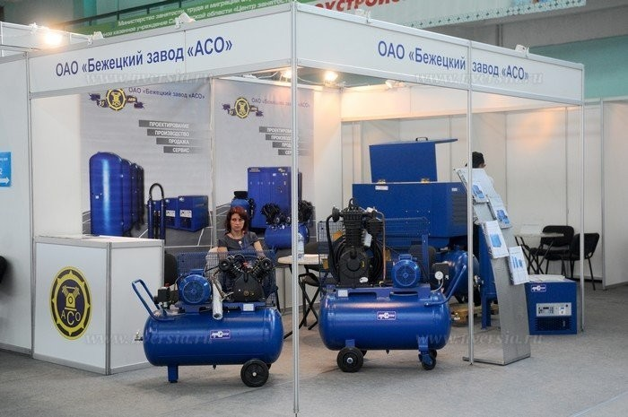Бежецкий завод «Автоспецоборудования» — предприятие историческое. С конца 40-ых бежецкие компрессоры расходились по всей стране тысячами. До сих пор завод производит запчасти к моделям, которые уже не продаются, но успешно работают. Сегодня в модельном ряду винтовые и поршневые компрессоры, аппараты струйной очистки, моечные установки, осушители и фильтры. Действуют линии порошковой окраски, полуавтоматическая гальваническая линия, лазерная резка металла. Бежецкий компрессорный завод хорошо известен своей продукцией не только российским потребителям, но и в странах СНГ. В течение нескольких десятилетий завод производит и поставляет оборудование для самых различных отраслей промышленности, сельского хозяйства, жилищно-комунального комплекса, автотранспортных предприятий. О качестве продукции «АСО» лучше всего говорит тот факт, что даже сейчас на предприятие нередко поступают просьбы отпустить деталь для компрессора, приобретенного 25-30 лет назад!
Бежецксельмаш
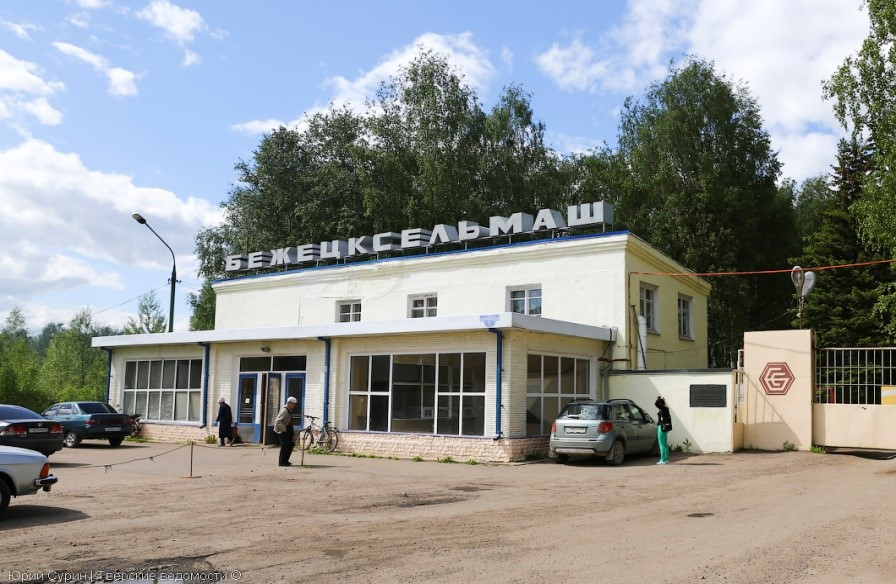 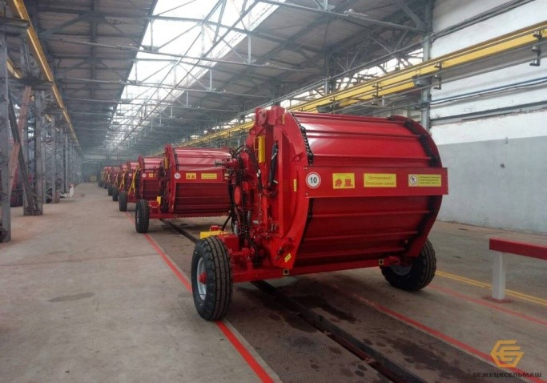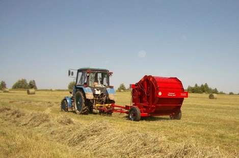Производство льнокомбайнов и оборудования для обработки льна, пресса рулонные сенные, косилки ротационные навесные, грабли ворошилки роторные, прицепы самосвальные герметичные, рыхлители дисковые прицепные, катки кольчато шпоровые. 14 сентября 1943 г. в городе Бежецке началось строительство завода сельскохозяйственного машиностроения. Была четко определена его специализация: производство машин для уборки и первичной переработки льна и запасных частей к ним .Первая очередь завода введена в действие в 1944 г. С 1949 г. по 1962 г. были введены в эксплуатацию литейный, кузнечно-прессовый цеха, сборочный цех №2, инструментальный цех, здание инженерного корпуса и экспериментальный цех с гальваническим отделением. Начато строительство ТЭЦ. В 1957 году было создано головное специализированное конструкторское бюроВ 1980 г. введена в эксплуатацию водогрейная котельная. В 1989-1994 годах проведена работа по реконструкции производственной котельной: модернизация оборудования, перевод котельной с мазута на газ. За время своего существования «Бежецксельмаш» освоил более 100 наименований машин.
Опытно-экспериментальный завод
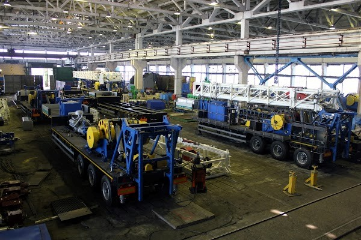 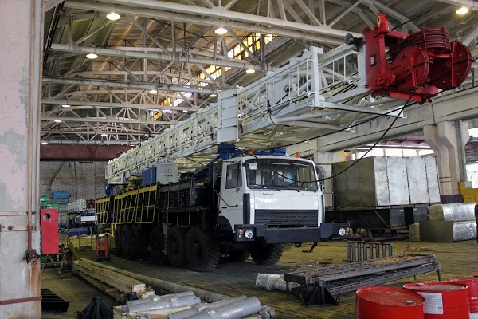Бежецкий опытно-экспериментальный завод (БОЭЗ) был создан 3 июля 1963 года. С 1965 года завод наладил производство технологической оснастки и средств механизации для производства нестандартного оборудования, а с 2009 года - нефтегазового бурового оборудования и твердо занял свою нишу в нефтегазовой отрасли страны. Завод производит 80-тонные буровые установки и 140-тонные мобильные буровые комплексы для нефтяной и газовой промышленности страны. Продукция поставляется по всей России, а также в страны СНГ и дальнее зарубежье. Заказчиками продукции являются бюджетообразующие компании России - "Роснефть" и "Газпром".